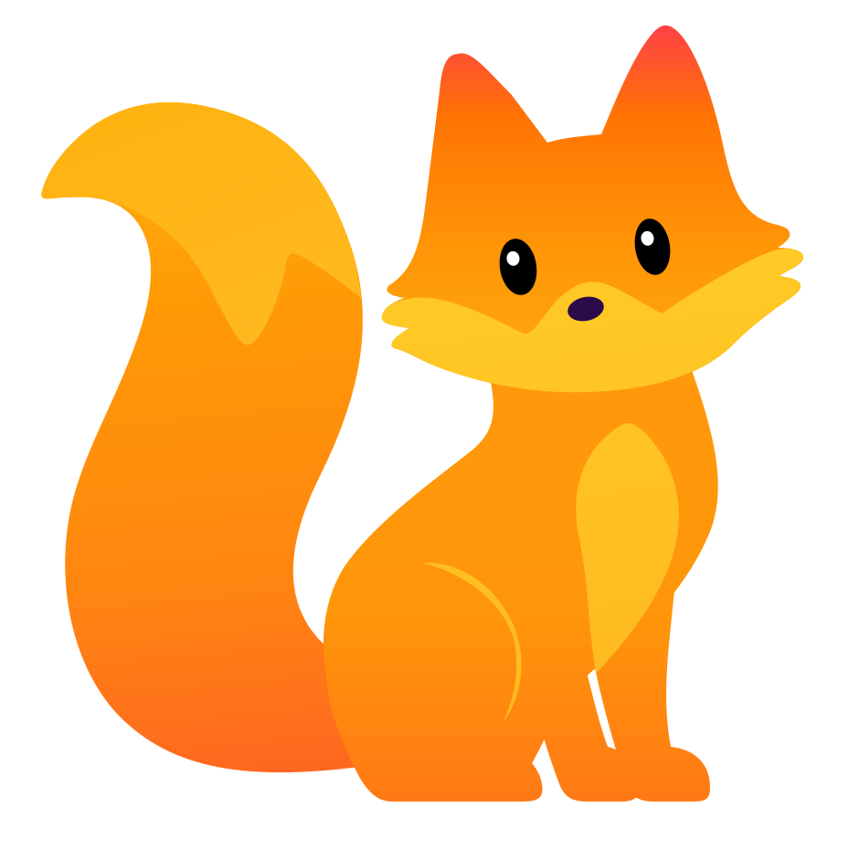


Os fundos pertencem à visualização. Personagem, rosto e símbolo são entregues com transparência.

Raposa branca
Brancos e cinzas suaves, com marcações claras e olhos pretos. Use preferencialmente sobre fundos médios ou escuros.
#CACACA#E3E3E3#FFFFFF#171717


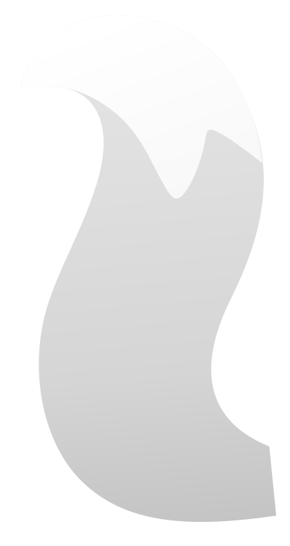


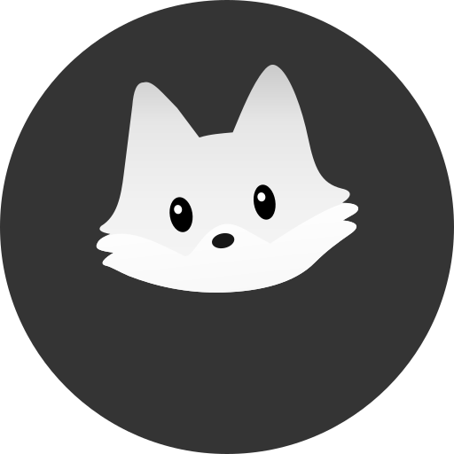


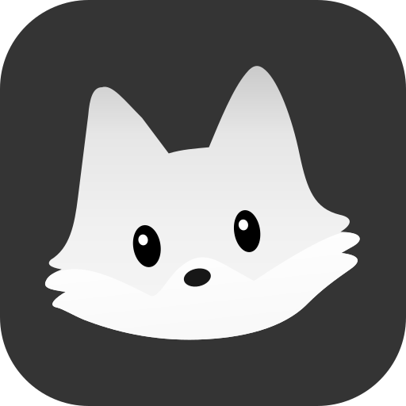


As mesmas oito expressões














Ícones em tamanho real


Raposa preta
Preto, carvão e grafite, com marcações em cinza para preservar a leitura. Use preferencialmente sobre fundos claros.
#262626#333333#8B8B8B#919191#080808
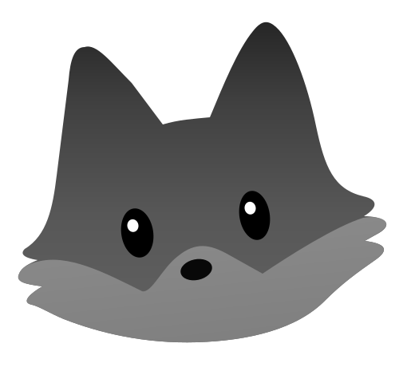


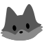


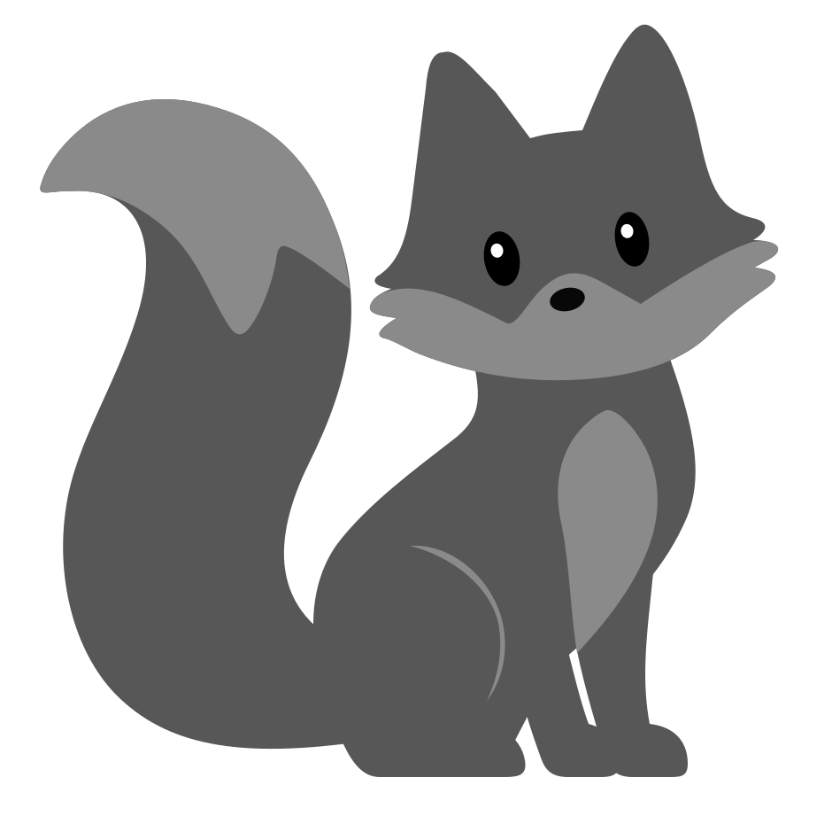


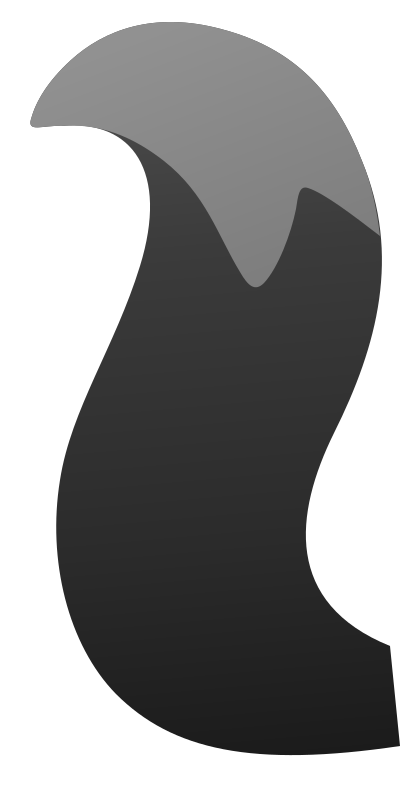




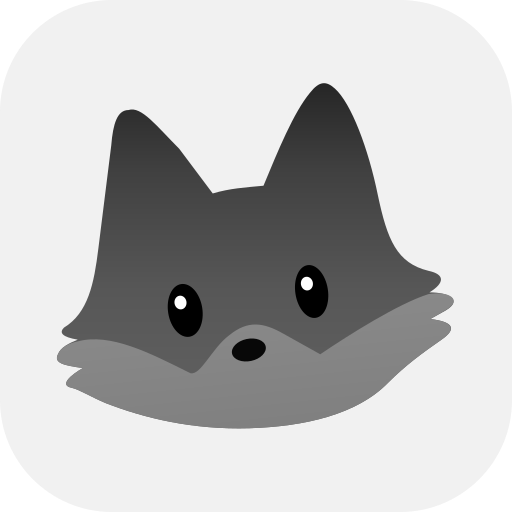


As mesmas oito expressões


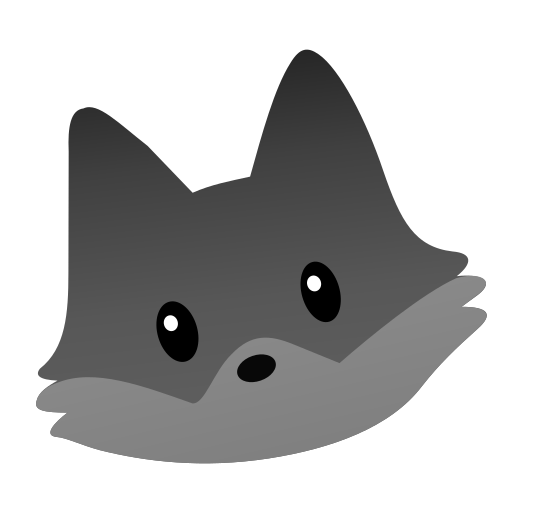


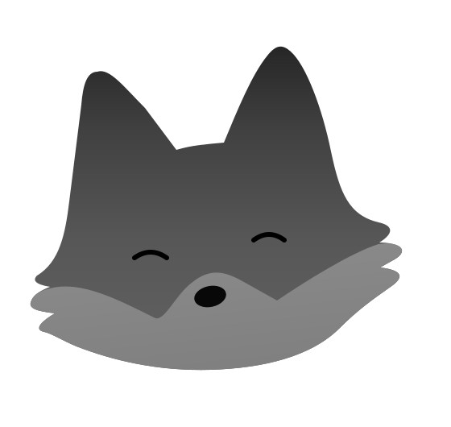


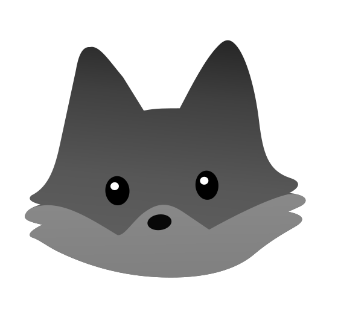


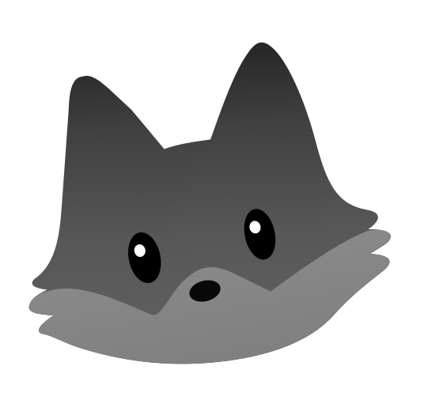


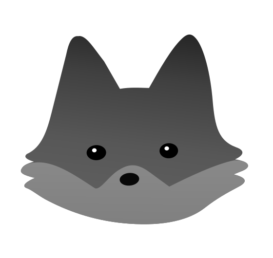


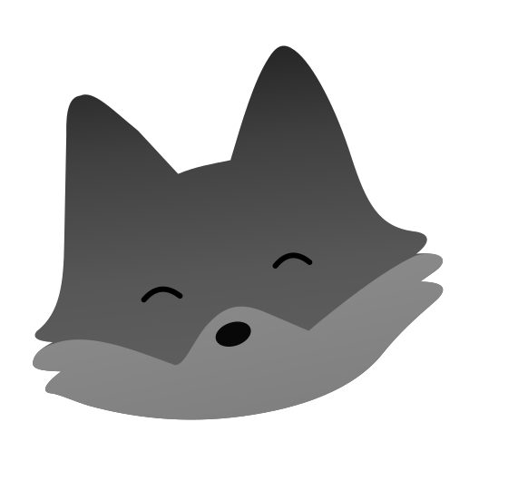